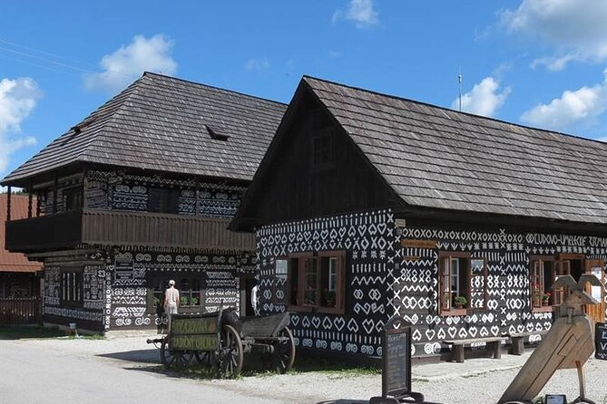
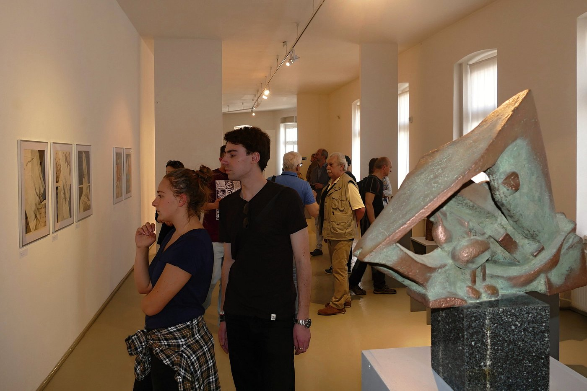

Famous Sites
Žilina, Slovakia, boasts several notable sites including Budatín Castle, Stanica Žilina-Záriečie, and the historic town center. Bojnice Castle, though not in Žilina itself, is a popular day trip destination from the city. The region also offers opportunities for hiking and cycling, with many hidden gems to discover.

Mariánske námestie (Marian Square)

Budatín Castle

Lietava Castle

Cicmany

Catacomb

Povazska galeria umenia